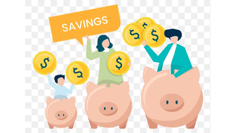

Savings
The importance of savings:
Having savings is crucial for financial stability and peace of mind. It provides a safety net for unexpected expenses or emergencies, helping you avoid high-interest debt and financial stress. Additionally, savings enable you to achieve both short-term and long-term financial goals, whether it's buying a home, starting a business, or retiring comfortably. Regular saving also cultivates financial discipline, encouraging healthy spending habits and reducing impulsive purchases. Ultimately, savings empower you to take control of your financial future and build wealth over time.
Tips/Strategies:
To maximize your savings potential, consider implementing the following strategies:
- Set Clear Goals: Define your financial objectives, whether it's building an emergency fund, saving for a vacation, or investing for retirement. Having specific goals helps you stay motivated and focused on your savings efforts.
- Create a Budget: Develop a comprehensive budget that outlines your income, expenses, and savings targets. Track your spending, identify areas where you can cut back, and allocate a portion of your income towards savings each month.
- Automate Savings: Take advantage of automatic transfers to your savings account. Set up recurring transfers from your checking account to your savings account on payday to ensure consistent saving without effort.
- Start Small, Increase Over Time: If you're new to saving, start with manageable amounts and gradually increase your contributions as your financial situation improves. Even small, regular contributions can add up significantly over time.
- Emergency Fund: Build an emergency fund to cover unforeseen expenses, such as medical bills or car repairs. Aim to save three to six months' worth of living expenses in an easily accessible, high-yield savings account.
- Invest for the Future: Consider long-term investment options, such as retirement accounts (e.g., 401(k), IRA) and brokerage accounts, to grow your wealth and secure your financial future.
Examples of savings accounts:
There are various types of savings accounts tailored to different financial goals and preferences:
- Regular Savings Accounts: Offered by banks and credit unions, regular savings accounts provide a safe and convenient way to save money while earning interest on your balance.
- High-Yield Savings Accounts: High-yield savings accounts typically offer higher interest rates than traditional savings accounts, allowing your savings to grow faster over time.
- Retirement Accounts: Retirement savings accounts, such as 401(k)s and IRAs, are designed to help individuals save for retirement by offering tax advantages and investment opportunities.
- Emergency Funds: Emergency funds are dedicated savings accounts specifically reserved for unexpected expenses or financial emergencies. These funds should be easily accessible and liquid.
- Certificate of Deposit (CD): CDs are time deposits that offer fixed interest rates and maturity dates. They are suitable for individuals looking for guaranteed returns over a specified period.